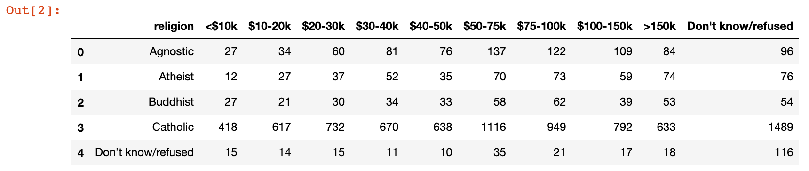
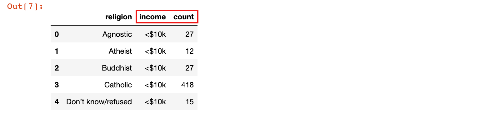
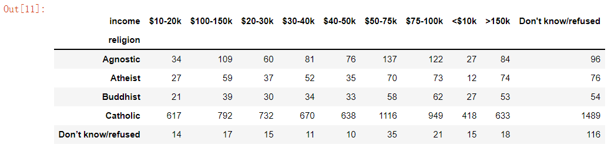
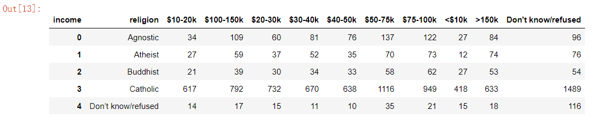
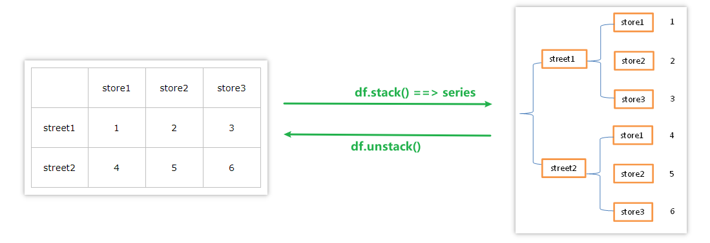
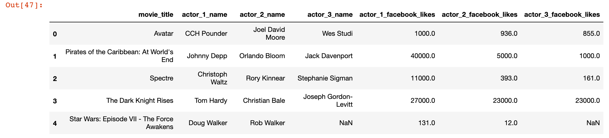
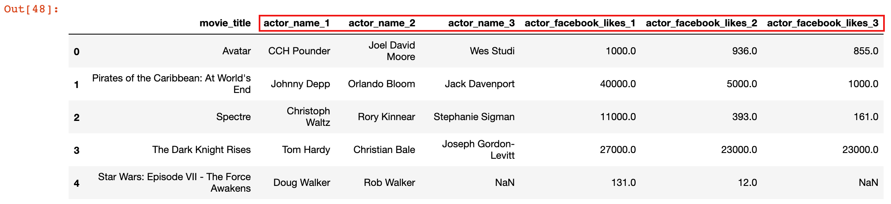
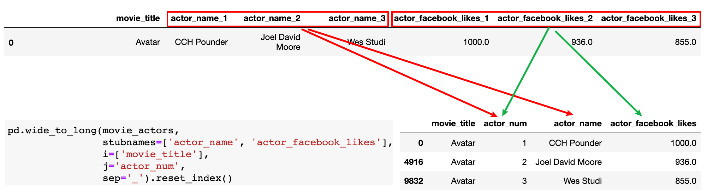

数据整理
学习目标
- 掌握melt、pivot函数整理数据的方法
- 掌握stack、unstack函数的用法
- 掌握wide_to_long函数的用法
1. melt/pivot 整理数据
1.1 melt函数功能演示
melt 函数可以将一个宽数据集变为长数据集
1）加载美国收入与宗教信仰数据 pew.csv
pew = pd.read_csv('./data/pew.csv')
pew.head()

2）先执行下面的代码，将输出的结果和上面的输出结果进行对比
pew_long = pd.melt(pew, id_vars=['religion'])
pew_long

结果说明：
1）我们发现，基于religion列，把原来的df拉长了，我们称原来的df为宽数据集，拉长之后的df称之为长数据集
- 对于展示数据而言，下图中
pew返回的这种"宽"数据没有任何问题，如第一行数据，展示了Agnostic（不可知论（者））所有的收入分布情况 - 从数据分析的角度，有时候我们需要把数据由"宽"数据，转换成"长"数据，就如同下图中
pew_long返回的数据 - 在pandas中我们就可以使用
df.melt()函数，通过各种参数，来达成宽数据集转换为长数据集的效果

1.2 melt 函数的参数
melt 是溶解/分解的意思， 即拆分数据；melt既是模块函数也是DataFrame类的实例方法，也就是说既可以用pd.melt(...), 也可使用dataframe.melt(...)的形式进行调用。
| 参数 | 类型 | 说明 |
|---|---|---|
| frame | dataframe | 必要参数，被 melt 的数据集名称在 pd.melt() 中使用，比如上例中pd.melt(pew, id_vars='religion')的pew |
| id_vars | tuple/list/ndarray | 可选项，不需要被转换的列名，在转换后作为标识符列（不是索引列），比如上例pd.melt(pew, id_vars='religion') |
| value_vars | tuple/list/ndarray | 可选项，需要被转换的现有列，如果未指明value_vars，除id_vars指定的其他列都将被转换 |
| var_name | string | 自定义设置variable列的列名 |
| value_name | string | 自定义设置value列的列名 |
1）比如，可以更改 melt 之后的数据的列名
pew_long = pd.melt(pew, id_vars=['religion'], var_name='income', value_name='count')
pew_long.head()

1.3 pivot 函数功能演示
pivot 函数是 melt 函数的逆运算，既是模块函数也是DataFrame类的实例方法，也就是说既可以用pd.pviot(...), 也可使用dataframe.pivot(...)的形式进行调用。
| 参数 | 类型 | 说明 |
|---|---|---|
| data | dataframe | 必要参数，被 pivot 的数据集名称在 pd.pivot() 中使用 |
| index | str/a list of str | 指定列标签，数据转换后，该列的数据会作为结果中的行标签 |
| columns | str/a list of str | 指定列标签，数据转换后，该列的数据会作为结果中的列标签 |
| values | str | 指定列标签，数据转换后，该列的值用于组成新 DataFrame 的元素值 |
pew_wide = pew_long.pivot(index='religion', columns='income', values='count')
pew_wide

# 重置行标签
pew_wide.reset_index()

2. stack/unstack 整理数据
2.1 stack 和 unstack 简介
pandas进行数据重排时，经常用到 stack 和 unstack 两个函数。stack 的意思是堆叠、堆积，unstack 即"不要堆叠"
常见的数据的层次化结构有两种，一种是表格，一种是"花括号"，即下面这样的两种形式：

stack函数会将数据从表格结构 变成 花括号结构（返回的是series类型），即将其列索引变成行索引，反之，unstack函数将数据从 花括号结构变成 表格结构，即要将其中一层的行索引变成列索引。
2.2 stack 功能演示
1）加载 state_fruit.csv 数据集
state_fruit = pd.read_csv('./data/state_fruit.csv', index_col=0)
state_fruit

2）使用 stack 函数整理数据，查看效果：
state_fruit_series = state_fruit.stack()
state_fruit_series

3）此时可以使用 reset_index()，将结果变为 DataFrame
state_fruit_tidy = state_fruit_series.reset_index()
state_fruit_tidy

4）给 columns 重新命名
state_fruit_tidy.columns = ['state', 'fruit', 'weight']
state_fruit_tidy

2.3 unstack 功能演示
1）使用 unstack 函数
state_fruit_series.unstack()

3. wide_to_long 整理数据
wide_to_long函数的作用是将列名起始部分相同的列进行拆解，使宽数据变换为长数据
需求：
- 加载
data/movie.csv数据，统计每部电影的每个主演的被点赞数，返回新的df - 新df 的列名为
movie_title、actor_num、actor、actor_facebook_likes：分别代表电影名称、演员编号、演员姓名、该演员被点赞数
3.1 初步整理数据
1）加载 movie.csv 数据
movies = pd.read_csv('./data/movie.csv')
movies.head()

2）去除无关字段
movie_actors = movies[['movie_title', 'actor_1_name', 'actor_2_name', 'actor_3_name',
'actor_1_facebook_likes', 'actor_2_facebook_likes', 'actor_3_facebook_likes']]
movie_actors.head()

3）整理 columns 列名
movie_actors.columns = ['movie_title', 'actor_name_1', 'actor_name_2', 'actor_name_3',
'actor_facebook_likes_1', 'actor_facebook_likes_2', 'actor_facebook_likes_3']
movie_actors.head()

3.2 wide_to_long函数的具体使用
1）先执行下面的代码，观看输出结果：
movie_actors_tidy = pd.wide_to_long(movie_actors,
stubnames=['actor_name', 'actor_facebook_likes'],
i=['movie_title'],
j='actor_num',
sep='_').reset_index()
movie_actors_tidy.head()

movie_actors_tidy[movie_actors_tidy.movie_title=='Avatar']

总结
- melt、stack、wide_to_long函数均可以实现将宽数据整理成长数据
- melt：指定数据列，将指定列变成长数据
- stack：返回一个具有多层级索引的数据，配合reset_index可以实现宽数据变成长数据
- wide_to_long：处理列名带数字后缀的宽数据
- melt/pivot ，stack/unstack互为逆向操作